MLB 2025 Analysis:#
It is almost time for baseball season. Return of the nerds unite.
I have created a set of predictions designed for my fantasy baseball league, an ESPN hosted 12 team points league. The easy and likely more reliable approach would be to simply convert one of the many projection systems on Fangraphs into fantasy points, however I wanted to take my own path. The scoring for players works as follows:
Pitchers: + 3 per IP (+ 1 per out) + 1 per K - 1 per BB - 1 per Hit - 2 per ER + 2 per Win - 2 per Loss + 2 per Hold + 5 per Save
Batters: + 1 per TB + 1 per R + 1 per RBI + 1 per BB + 1 per SB - 1 per K
The scoring can be edited in here if you are playing under a different scoring system. Although this is designed for fantasy purposes, it can still generally be applied for overall player value (minus defence). Batter fantasy score can be interpreted as an overarching offensive stat, while pitcher fantasy points function similarly, but to a lesser extent as “team” related stats such as Wins, Losses, Holds, and Saves are more prevalent. Keep in mind this definition of “team stats” as I will use it throughout.
I would classify these more as supplemental rankings - there are many small nuances that I was not able to capture simply due to not having enough time to account for all of these. For example, pitchers converting from relievers to starters such as Clay Holmes are not adjusted for their new role. Keep this in mind when looking at the rankings and use judgement where need be. Other small issues do persist, such as players with the same name (ie. Luis Garcia) all being classified as one player.
Note: the model does not predict rookies - I have not been able to correctly implement minor league data yet.
Before all of this credit to Baseball Savant (https://baseballsavant.mlb.com/), Fangraphs (https://www.fangraphs.com/) along with RazzBall (https://razzball.com/) for the data used in my analysis.
Creating Player Forescasts#
Model Development:#
Now im going to talk a bit about how these predictions came about. If you don’t care - skip to the predictions and analysis section to see the players of interest.
The intent behind my model is to use metrics & advanced stats from the previous year to predict fantasy points for the current year. So for this year looking at metrics from the 2024 season and utilizing those to predict 2025 fantasy points. Rather than predicting season long fantasy points, I predict fantasy points per IP for pitchers and fantasy points per game for batters. It is nearly impossible to predict how many games a player will play each season - and therefore I remove this factor from our initial evaluation. The metrics include a lot of statcast data - exit velocity, fastball spin rate, etc. along with some more descriptive statistics such as K% or pull%. Since I am using a lot of statcast data it only ranges from 2015-present. Another key feature used in prediction is the percentile of the weighted average of the fantasy scores of the last two years. So if the current player’s metrics are from 2023, this feature will be the percentile of ((Fpoints22 * 0.7) + (Fpoints21 * 0.3)) throughout the entire dataset. This works as an indicator of the player’s performance prior to the current data, weighing more recent perfomances heavier. Players who do not have data from the previous 2 years (via injury or not being in the MLB) are assigned values through the use of an imputer. This imputer looks at entries that do have this previous data, computes an approximate formula, and then applies this to fill in missing values. Another engineered feature is K%/BB% - because it is the king of all predictive statstics for pitchers, and works fairly effectively for batters as well. I also created feature representing the yearly averages of each metric/statistic in an attempt to recognize the year-to-year variation. We don’t want the model to think every player in 2019 was prime Barry Bonds.
Once these features are created the data was run through a prototypical ML workflow - train/test split, preprocessing, hyperparameter optimization and model selection. Models are created separately for pitchers and batters as the feature set used is entirely different. The optimal pitcher model ended up being a LASSO (L1) regressor with a MSE of 0.44 (average fantasy points per inning is ~ 2), and the optimal batter model was a Gradient Boosting regressor with a MSE of 0.33 (and a similar mean of ~ 2).
Here are the top 10 features in terms of model feature importance for the pitcher model:
| Feature | Importance | |
|---|---|---|
| 0 | k_percent | 0.143281 |
| 1 | fastball_avg_speed | 0.060041 |
| 2 | whiff_percent | 0.051201 |
| 3 | KpBB% | 0.046999 |
| 4 | z_swing_miss_percent | 0.042774 |
| 5 | Fpoints_IP_two_prev_year | 0.042523 |
| 6 | f_strike_percent | 0.042179 |
| 7 | breaking_avg_break | 0.035291 |
| 8 | fastball_avg_spin | 0.022523 |
| 9 | offspeed_avg_speed | 0.018227 |
And for the batter model:
| Feature | Importance | |
|---|---|---|
| 0 | Fpoints_G_percentile | 0.423210 |
| 1 | xwoba | 0.082674 |
| 2 | xba | 0.062978 |
| 3 | xslg | 0.051417 |
| 4 | oz_contact_percent | 0.036774 |
| 5 | xobp | 0.033210 |
| 6 | age | 0.025769 |
| 7 | sprint_speed | 0.021797 |
| 8 | avg_best_speed | 0.015279 |
| 9 | exit_velocity_avg | 0.014472 |
Both models end up slightly more reliant on K% than most commonly used statistics - but strikeouts are critical (good for pitchers, bad for hitters) in fantasy. Also having a Spencer Strider pitch 100 innings with 125 K’s and a 2.5 ERA is much more exciting than someone like Kyle Gibson soft tossing groundballs for 175 IP and a 4 ERA. But thats just my opinion. Also note the HIGH importance of the previous year percentile feature.
Predictions#
Now that the model is trained its time to use it. We take the metrics from 2024 and predict our 2025 values. For pitchers I created two different scores - one not including “team stats” called fpoints_proj_skill, and another including called fpoints_proj. Not that wins and losses don’t require skill - just sometimes they don’t. I utilize Razzball’s Steamer/Razzball projections to get values for games played for batters, along with innings pitched and all team counting stats for the pitchers. From there we have our initial projections for 2025! The hitter projections are found here, pitcher projections here, and full projections here.
Positional Adjustment:#
It happens to me every year where I forget to draft a certain position and end up with a very unsatisfactory option. This notion of positionality needs to be quantified in some way in order to truly capture a players impact on a fantasy team. The standard ESPN roster has the following positions:
C
1B
2B
3B
SS
OF * 3
UTIL (any batter)
P * 7 (SP or RP)
Bench * 3 (any)
We also play with a weekly starts cap (TBD but probably 12) and limiting weekly additions to prevent pitcher spamming. I usually like to construct my roster with at most 3 RP and at least 2 of my 3 bench spots as pitchers.
To calculate this positional adjustment I first get the mean and standard deviation of fantasy points for each position (including only the top 300 scorers). The distributions come out as below.
From here the initial positional adjustment is calculated as: $\( \text{pos\_adj} = \left( \frac{\mu_p - \mu}{\sigma_p} \right) \times \sigma \times 0.5 \)$ where we standardize the difference from each position to the overall mean, and then rescale by the overall SD, and multiply by 0.5 just to reduce the effect a bit.
Another adjustment is applied for each position taking into account the importance of the position. These are admittedly arbitrary values created by yours truly, however the effects are not very significant. It reduces the value of more abundant positions such as SP, and OF, along with reducing the value of DH as there is no set spot on a team (they would have to be used in UTIL). A few more minor adjustments were also made to increase the value of catchers and further decrease the value of pitchers.
The resulting adjustment values are shown below:
| Pos | mean | std | pos_adj | |
|---|---|---|---|---|
| 0 | 1B | 322.116217 | 52.852769 | -6.087865 |
| 1 | 2B | 296.160442 | 46.739445 | 10.415340 |
| 2 | 3B | 308.411984 | 64.004061 | 1.642868 |
| 3 | C | 289.196370 | 30.518661 | 34.589502 |
| 4 | DH | 346.544905 | 119.092538 | -27.275181 |
| 5 | OF | 308.809142 | 62.415301 | 2.477440 |
| 6 | RP | 276.259683 | 39.371023 | 6.624046 |
| 7 | SP | 335.029272 | 62.892789 | -56.022887 |
| 8 | SS | 323.558628 | 61.526180 | -5.959969 |
Lastly a bonus of 5 points was added to players with multiple batter positions (not including DH), and a bonus of 20 was applied to anyone who can play catcher along with another positions. Now these are applied to each player, and the final rankings are created. If you are interested please check them out here. One caveat - Ohtani does not have both his hitting and pitching predictions here. He is obviously #1 overall if he has both. Check out the next chapter if you want to see some of my takeaways.
Players to watch#
Here I will provide three players for each position - one upper echelon player to target, one sleeper, and one bust. Upper echelon players are likely going in top half of drafts and may be contested. Sleepers are generally going to be outside of the top 200 according to ESPN rankings and can likely be selected at the very end of the draft. Upside is the goal of sleepers. I will provide a brief description along with a lime plot explaining what stats drove the predictions up and down in my model. The plot will show the value of each feature (which is scaled), and more importantly the impact on the prediction. A green bar indicates a positive contribution while red indicates negative, and the magnitude indicates how large of a contribution.
I will not be talking about DH - my only suggestion is do not draft a DH only player (besides Ohtani) as it really can clog up a lineup having to always use them as UTIL.
Catchers#
See catcher rankings here
Upper Echelon: Willson Contreras - STL (My rank: 112, ESPN 126)#
Catcher is a very barren position in fantasy baseball. My rankings also do not particularly like catchers - Willson is one of the few catchers whose rank is higher in my predictions. Contreras has had an OPS above .800 for the previous 3 seasons and is showing no signs of slowing down. He paired quality batted ball metrics (93th percentile xwOBA, 86th percentile avg EV) with one of the best eyes in the league (97th percentile walk rate) last season. He seemed to change his approach last season, with a spike in walk rate and also a spike in strikeout rate. We can live with this strikeout rate as its offsets with the walks. The best part - he is primed to play a near-everyday role this season at first base, allowing him to gain eligibility at another position while playing far more than nearly all other catchers. If you want a high level catcher without spending a top 50 pick on his brother or Adley this is your guy.
Sleeper: Luis Campusano - SDP (My rank: 203, ESPN 325)#
We are digging deep here as once again catcher options are limited. Campusano’s success relies on maintaining a solid role ahead of Elias Diaz - which can easily be achieved. He disappointed last year after a strong 2023 campaign highlighted by a .319 BA and .847 OPS, albeit in only 174 plate appearances. Last year that fell to a .227 BA and a .642 OPS with below average expected stats as well. This seems to stem from a decrease in launch angle sweet spot % - hitting far more weak groundballs and less line drives. However he did underperform his estimators with an xSLG and xwOBA both about 40 points higher than the true stats. He also is very adept at not striking out, with strikeout rates < 14% the last two years. This raises his floor significantly, although he rarely walks. Catchers usually pop up on the waiver wire throughout the season, so if you are looking to “punt” catcher this is a good shot.
Bust: Tyler Stephenson - CIN (My rank: 307, ESPN: 147)#
Note: My model quite dislikes Yainer Diaz, however I feel he will still be a top 5 option Stephenson is quite an average hitter - many of his metrics are around the middle of the pack. His plate discipline has improved over the years, and playing at Great American Ballpark always helps, however he just does not excite me. He overachieved his estimators last season, specifcally in regards to slugging with a SLG .40 points greater than his xSLG. He also puts the ball on the ground more than average at 47.8 GB%, limiting his overall upside. Not the worst pick you could make, but Stephenson is likely just above the “droppable” threshold for a catcher and drafting and holding him all season rather than picking up a breakout catcher off waivers may prove costly.
First Basemen#
See first basemen rankings here
Let me say one thing - having Luiz Arraez above Vladdy is questionable at best.
Upper Echelon: Matt Olson - ATL (My Rank: 31, ESPN: 52)#
We are quick to forget that Olson hit 54 home runs with 139 RBIs and a fourth place MVP finish just two years ago. He does strikeout a fair amount (25% last season), however he offsets this with good discipline at a 10% walk rate last year, although down from 14% in 2023. Last season was a difficult season for Atlanta as a whole, and I expect a bounce back from all of them with Olson at the head of it. He was still significantly above average in a large majority of metrics last season, headlined by an avg EV and barrel % above 80th percentile. Not to mention his savant page in 2023 that is a sight for sore eyes with 6 stats at or above the 95% percentile. I wouldn’t expect 2023 all over again, but buy into the bounce back this year.
Sleeper: Tyler Soderstrom - ATH (My Rank 129, ESPN 435)#
Soderstrom destroys baseballs - especially fastballs. He had a .620 SLG (.649 xSLG) and a .444 wOBA (0.447 xwOBA) last season against them. He also achieved a 14.6 barrel % (~ 90th percentile) along with a 91.9 avg EV last season. He is a bit prone to the swing and miss with a 25% K rate last year, however that is an increase from his 30% K rate previously. Keep in mind this is a small sample - only 213 plate appearances - likely explaining the complete missage of his ascencion by ESPN. If he can make any progress hitting the breaking ball and offspeed this season watch out. Another thing to note: the Athletics are moving from a notoroius pitcher’s park in Oakland to a park that should at least be somewhat hitter friendly in Sacramento. He has also played catcher in nearly half of his professional (including minor league) games. Don’t expect catcher eligibility, but 10 games at catcher this season to gain catcher eligibility is definitely not impossible. Buy in at the end of your drafts.
Bust: Spencer Horwitz - PIT (My Rank 447, ESPN 170)#
Note: my rank does include the fact that Horwitz will be out for the first few weeks of the season. I am a Blue Jays fan (unfortunately) so this does hurt a bit. Horwitz has just never pushed the needle for me. He is good at putting the ball in play (19.4% whiff rate) and has a relatively low K rate (18.4%) and high walk rate (11%), but he lacks juice. A 29th percentile avg EV paired with 17th percentile bat speed really limit his power potential. Although the move to PNC Park may help him as it is a gap hitters park, he faces a steep lineup decrease around him, limiting RBI chances. He is also 27 years old coming into his first true full season, limiting the room for growth a bit. First base has a plethora of lower-tier options, and if you are taking this route I would suggest pivoting somewhere with a bit more upside.
Second Basemen#
See the second basemen rankings here
Upper Echelon: Luis Garcia - WSH (My Rank: 81, ESPN: 160)#
This is very borderline for what is considered upper echelon, however none of the options above Garcia really spoke to me. I do think Xander Bogaerts is good for a bounce back season as well.
Garcia very quietly broke out last season along with his middle infield partner CJ Abrams. He was two home runs away from a 20-20 season while also contributing a .762 OPS at a relatively barren position. He is not capable of walking with a BB% of 5%, however he avoids striking out (16.3%) and squares the ball up well with decent exit velocities. He also increased his average launch angle by 3 degrees last year, indicating a shift in approach. He is nothing special, but he is a quality second baseman who will contribute in many different ways without hurting you too badly. He is also a good fielder - although this doesn’t help in fantasy. If you don’t want to use an early pick on someone like Ketel or Altuve, Garcia could be a nice fallback option.

Sleeper: Brandon Lowe - TBR (My Rank: 230, ESPN: 282)#
Lowe is not your prototypical second baseman - if anything the opposite. When he makes contact it goes well: last season he has a 91st percentile xSLG and 94th percentile LA Sweet Spot % (how often he hits the ball at the ideal launch angle). However he strikes out at a 26% clip while only walking 8% of the time. He is often hampered by injuries (only 1 of 7 season with more than 110 games played), however he always produces. Lowe has obtained an OPS+ of at least 100 in every season of his career. People forget he hit 39 HR with a 140 OPS+ in 2021 to follow up his 154 OPS+ 2020 campaign. We obviously aren’t expecting these numbers anymore, but he is still more than serviceable. His game is less conducive to fantasy than many others, but there is a chance he has a big season in store.
Bust: Marcus Semien - TEX (My Rank: 46, ESPN: 32)#
This is not a case of a total bust - Semien is just slightly overvalued here. Semien has always been a very heavy “pull for power” hitter - something that expected stats and batted ball metrics fail to capture. However his numbers decreased significantly last year, dropping from a .826 OPS to a .699 OPS. He is 34 years old and may be at the beginning of a downturn. He does put the ball in play very well, however there just isn’t much juice there with a 10th percentile bat speed. The stolen bases are dropping as well, down to 8 from 25 in 2022. One plus of Semien is that he always plays, eclipsing 700 plate appearances in each of the last 3 seasons. Another irrelevant fielding note: Semien was still 100th percentile in OAA last season. Impressive! Semien is a high floor low ceiling pick, and ESPN’s valuation of him as a fourth round player is just a bit high for me. Take him in the 6th on if he gets there.
Third Basemen#
See the third basemen rankings here
Upper Echelon: Alex Bregman - HOU (My Rank: 13, ESPN: 38) AND Austin Riley - ATL (My Rank: 38, ESPN: 64)#
I will be coming out of my draft with one of these two at third base.
First, Bregman. He is elite at making contact with a 13% K rate and an obscenely low 13% whiff rate. He also squares the ball up very well with a 96th percentile squared up rate. His metrics may not make you frolic around the kitchen, but he is another one of the “pull for power” types. The caveat: he just moved to Fenway Park and will be taking shots at the Green Monster all season. This should lead to a ton of extra base hits. The decrease in walk rate is slightly concerning (13% in 2023 to 7% in 2024), but this seems like an outlier given he has had a BB% > 11% for the prior seven seasons. He will also very likely gain 2B eligibility this season, barring Rafael Devers realizing he is an awful defender at third base.
Similarly to Matt Olson, I expect a bounce back season from Austin Riley. He just mashes baseballs. In a down season last year he still was 90th percentile or above in the following metrics: xwOBA, xSLG, avg EV, Barrel%, Hard-Hit% and Bat Speed. He underachieved his estimators as well, with his SLG .40 points below his xSLG and wOBA .25 points below his xwOBA. He does strike out more and walk less than you would like, but his underlying stats mirror his 2022 and 2023 stats where he hit for a .877 and .861 OPS respectively. He also dealt with oblique injuries throughout the 2024 season, likely hampering his play. I’m taking Riley every day of the week, especially at this ESPN rank.
Sleeper: Matt Shaw - CHC (My Rank: NA, ESPN 276)#
Forget about my projections for a second here. There aren’t a ton of sleeper third baseman that excite me so I’m going to go with the Cubs rookie, who is slated to start at third base with the departure of Isaac Paredes. The 13th overall pick in 2023 has lit up the minor leagues to a tune of at least a 120 wRC+ at every level he has played at, including an overall wRC+ of 146 last season in AA/AAA. He had above average walk and strikeout rates at 12% and 18% respectively last season, which helps his fantasy stock. He also stole 31 bases last season. He loves hitting the ball to the opposite field - with 41% of his balls in play last year going there. Major projection systems have him hovering around a .720 OPS next season with ~15 HR and 20 SB. He is eligible at 2B and SS as well in ESPN leagues. Shaw could prove to be a very valuable utility man for your team at the end of drafts.
Bust: Nolan Arenado - STL for now (My Rank: 123, ESPN: 70)#
Arenado’s time as one of the leagues elite may be coming to an end. His OPS dropped to .719 last season after hovering around or above .800 for his entire career. He also produced a dismal 6th percentile barrel percentage (3.2%) along with a 9th percentile avg EV (86.3). His metrics have been declining year after year, although he never truly lit up the savant page with his pull heavy approach. Walking is not a strong suit of Arenado, with a 6.9% walk rate in 2024. His saving grace is a lack of strikeouts (92nd percentile at 14.5 K%). Barring a trade and career revival I would fade Arenado, especially at rank 70.
Shortstop#
See shortstop rankings here
Upper Echelon: Fransisco Lindor - NYM (My Rank: 14, ESPN: 17)#
Everyone knows Francisco Lindor is amazing, but he might be even better than we think. Before we even get into fantasy relevance - just sit with how good of a fielder he is at the most important position on the field. After a cold start for his standard in the Big Apple, Lindor has turned it back on the last two year, reaching an OPS above .800 both years. He barreled baseballs at a 13.6% rate (90th percentile) and was above the 90th percentile in xwOBA, xBA and xSLG in 2024, which were his best numbers since 2018. He really has no weaknesses at the plate - he does not strikeout a ton, walks at an average rate, and hits well from both sides of the plate. He has also stolen an average of 30 bags a season over the last two years, being just one SB short of his second straight 30/30 season last year. Don’t forget he will likely hit leadoff in front of Juan Soto and Pete Alonso this season - two of the best RBI hitters in baseball. Lindor is a safe top 15 choice with the potential to rise even further if things go well.

Sleeper: JP Crawford - SEA (My Rank: 163, ESPN: 273)#
In terms of pure hitting JP Crawford does exactly push the needle. He does however have an approach that caters well for fantasy. He walks a ton (11.5% BB rate last year), and although the strikeout rate was a bit up last season at 22.6% he has previously been adept at avoiding the K. Prior to last years campaigned that was derailed due to a pinky fracture, he produced three straight seasons on an OPS+ above 100. His hard hit% and barrel% have been on the rise over the last few years, and he did underperform his estimators of xSLG and xwOBA by 0.50 and 0.30 points respectively last season. Don’t expect 30 home runs, but Crawford could prove to be a sneaky option if you are clamoring for a shortstop a the end of your drafts. 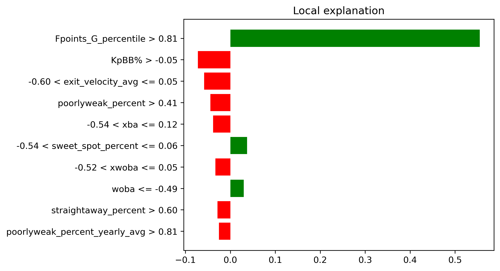
Bust: Elly De La Cruz - CIN (My Rank: 96, ESPN: 69)#
One of if not the most electric players in the MLB is a tad less electric in fantasy. Let me set this straight - I love Elly’s game. Who doesn’t want to see a 6’5 shortstop who runs like a man chasing his ex and can hit baseballs to Narnia. He just strikes out way too much to be a top tier option in fantasy with a 31% K rate last year. He also struggles to square up baseball with a 20th percentile squared-up% last season. His kryptonite is anything but a fastball - Elly had a .262 xwOBA against breaking balls and .279 against offspeed last year. He is still young and can fix these issues - but with the hype that surrounds him I would expect him to come off the board even earlier than the 69th spot that ESPN gives him. I wouldn’t blame you for buying into the hype, but I cannot recommend it.

Outfield#
See outfield rankings here
For outfielders I will be providing two for each category.
Upper Echelon: Julio Rodriguez - SEA (My Rank: 24, ESPN 63)#
This one is pretty obvious if you have watched Julio play. He does strikeout a bit more and walk a bit less than you’d like, but he more than makes up for it at the ESPN rank he is given. Julio crushes baseball to the tune of a 95th percentile avg EV of 92.7, along with possesing 98th percentile bat speed at 77.2 MPH. His .734 OPS last season seems very mundane, however he really heated up in the second half at a .818 OPS. He will also provide you with some stolen bases, reaching at least 24 in each of the last three years. Although he has to contend with the awful hitters park that is T-Mobile Park, this could be the year where Julio truly breaks into the league elite.

Upper Echelon: James Wood - WSH (My Rank: 115, ESPN: 136)#
I’ll admit James Wood does profile a bit like Elly De La Cruz who I just labelled a bust. Wood turns the narrative however with an 11.6% BB rate, which is around the 90th percentile. He has insane pop as a 6’7 outfielder, and has tons of room to grow at only 22 years old. Wood was called up for 300 plate appearances in the second half last season and posted a .781 OPS with above average metrics nearly across the board. He did tease an improvement in strikeout prior to the call up posting an 1.82% K rate in AAA - albeit in only games. He struggles with putting the ball in the air (especially pulling flyballs) with only a 18.2 flyball % last season, but with even slight improvements here Wood can become elite. To add onto it all Wood stole 24 bases combined in AAA and the MLB. There is tantalizing upside here for a player who seems to have already set himself a fairly high floor.

Honorable Mention - Mike Trout - LAA (My Rank: 119, ESPN: 187)#
Not much to say here - if Trout stays healthy he can be a top 10 player. Odds are he doesn’t, but maybe this is the year???

Sleeper: Jorge Soler - LAA (My Rank: 131, ESPN: 231)#
I can’t believe I am talking about two Angels in a row here in positive manner. Sorry Angels fans.
The 2021 World Series MVP has quietly been a well above average hitter over the majority of the last 7 years - highlighted by a massive 48 home run season in 2019 (where he did also lead the league in strikeouts). The strikeout problem is apparent and so is his defence - but the power is still there. He posted a .780 OPS last season highlighted by an 86th percentile barrel rate and a 83rd percentile xwOBA - helped out by a 92nd percentile 11.8 BB%. He has bounced around over the past few seasons likely due to his inability to play in the outfield, but on an Angels roster with pretty limited options he could settle in nicely as the everyday DH. One can hope he gets traded to the Braves at the deadline for a third time where he boasts a 132 OPS+ throughout his two stints. Soler is a good upside swing at the end of the draft, who you won’t feel bad about dropping if things go poorly either.

Sleeper: Michael Conforto - LAD (My Rank: 212, ESPN: 334)#
Keep in mind here Conforto is likely to sit against left-handed pitching.
Conforto has had a weird last few seasons. He posted some huge seasons with the Mets prior to leaving in 2021, including a 159 OPS+ 2018. Then he missed the entire 2022 season and has come back down to earth a bit with the Giants, posting a 100 OPS+ in 2023 and 116 OPS+ in 2024. He is not amazing at any particular trait - posting about average strikeout and walk rates - however he does consistently but the ball in play hard. This is backed by his 80th percentile barrel % and 89th percentile xSLG in 2024. Conforto underperformed his estimators last season by slight margins of about 0.30 points for both SLG/xSLG and wOBA/xwOBA, indicating there is a bit more in the take here. Take into account a park and surrounding lineup boost moving from the Giants to the Dodgers, and we could be looking at some good value here in Conforto late in drafts.

Bust: Anthony Santander - TOR (My Rank: 70, ESPN: 27)#
The newest Toronto Blue Jay had an excellent season last year - hitting 44 home runs and eclipsing a 130 OPS+. It just seems extremely unlikely he replicates this again. Santander excels at pulling flyballs, especially from the left side of the plate, with a pull percentage of 43% and a FB% of 34% in 2024. Under the hood there is really nothing special about Santander - he has slightly above average strikeout (19.4%) and walk (8.7%) rates, while also only producing a 58th percentile xwOBA even with the aformentioned counting stats. His SLG of .506 was also a whopping 0.60 points higher than his xSLG, indicating Santander may be due for some power regression. I would easily fade Santander at his ESPN ranking - wait a couple more rounds before taking him.
Bust: Jazz Chisholm Jr. - NYY (My Rank: 142, ESPN: 106)#
The former cover athlete of MLB The Show has had a bit of a tumultuous career. He has been expected to break out seemingly every season - but has never truly taken that leap. The main culprit on the offensive side is his inability to hit breaking balls - Chisholm posted a lowly .365 SLG and an even lower .238 xwOBA against breakers last season. He is also prone to the swing and miss with a 24.5% K rate and 29.3% whiff rate in 2024. He did improve after being traded to the Yankees - up to a 130 OPS+ during his 46 game stint in the Bronx - and the presence of the short porch in right will definitely benefit Chisholm. His only truly above average offensive skill is his ability to steal bases (40 last season), as many of his contact metrics are middle of the pack. Chisholm is a very entertaining player to watch, but it may be more enjoying without him on your fantasy team. 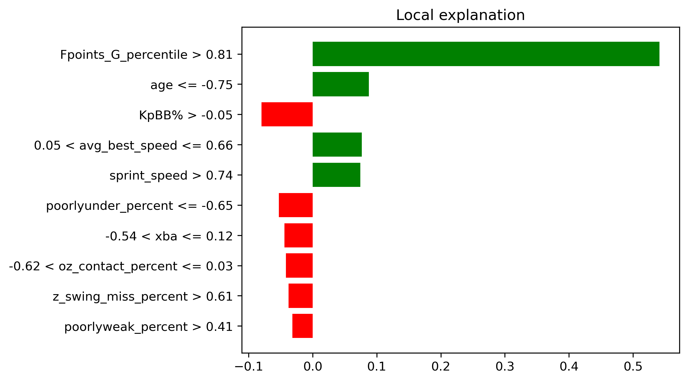
Starting Pitchers#
See starting pitcher rankings here
Drafting starting pitchers is easily the most important part of a fantasy team - hence I will provide many options here.
Upper Echelon: Chris Sale - ATL (My Rank: 18, ESPN: 31)#
First of I will acknowledge the injury concerns. Acknowledged. Sale just came of an absolutely dominant 2024 season where the won the NL Cy Young along with the Triple Crown. He also led the league with a ridiculous 225 strikeouts and a miniscule 2.09 FIP. These are nearly prime Jacob Degrom numbers. Age is also a factor here with Sale going into his age 36 season, but if what we saw last year is any indication age related regression is not a concern. Sale leaned on his slider more than ever last season, actually making it his primary pitch with a 40.3% usage. This was for good reason as against Sale’s slider batters returned a .212 xwOBA with a 42.7% whiff rate. Sale also really limits walks, with an 87th percentile BB% of 5.6% last year that mirrors his prime numbers with the White Sox. I would expect some regression in terms of ERA, simply because it is nearly impossible to maintain an ERA sub 2.50, but expect similar strikeout numbers this year barring any injury. Sale is a fantasy ace who should be considered as a borderline top 5 fantasy starter this season. 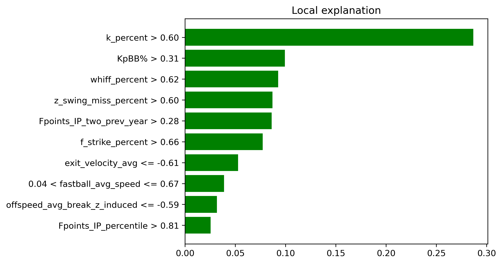
Upper Echelon: Joe Ryan - MIN (My Rank: 26, ESPN: 68)#
Ryan quietly had a very good season in 2024 - highlighted by an xERA of 2.87 (0.73 points below his true ERA of 3.60) along with a xFIP of 3.44. His stuff does not jump off the page intially with an average fastball velo of 94 MPH - however his fastball is extremely effective due to the rising effect he generates along with above average arm-side run. Over the last two seasons Ryan has added a splitter and sweeper, both of which complement his fastball very effectively. Although he is largely a flyball pitcher - which can lead to home runs - Ryan has been lowering his flyball rate season by season (down to 45% in 2024 from 53% in 2021) which is encouraging. Where Ryan really excels is with walks and strikeouts, sporting an 80th percentile 27.3 K% along with a miniscule 96th percentile 4.3 BB%. This makes him an extremely fantasy friendly option even if the ERA does not improve. Expect Ryan to fully break out this season and truly assert himself as a top pitcher in the league 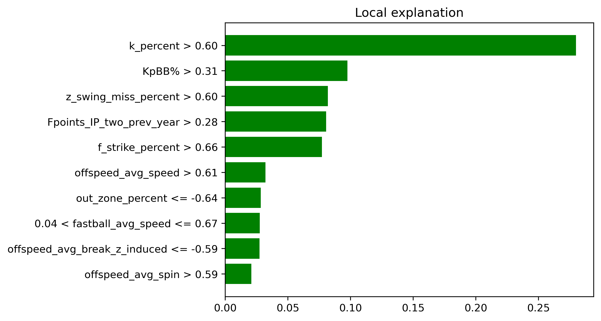
Upper Echelon: Bailey Ober - MIN (My Rank: 37, ESPN: 78)#
Ober presents an eerily similar skillset to the aformentioned Joe Ryan… the Twins seem to be on to something here. Ober introduced a new cutter to pair with his big breaking slider (12.4 inches of horizontal break) in 2024, leading to mixed results. His ERA in 2024 of 3.98 was the highest of Ober’s last three seasons, however his xFIP was the lowest of his career at 3.83. Ober struggles with flyballs - and specifically the home run - with a 50% flyball rate and a 11.6% HR/FB rate in 2024. His fastball averages at only 91.7 MPH, however Ober’s 97th percentile extension of 7.3 feet allows him to compensate for the lack of velocity. Once again similar to Joe Ryan, Ober thrives at limiting walks and producing strikeouts, with a 78th percentile K% of 26.9% and a 80th percentile walk rate of 6.1%. Ober should carry on as a very effective pitcher in 2025, with the potential to elevate himself even further if he can find a way to reduce the home runs.

Upper Echelon: Grayson Rodriguez - BAL (My Rank: 53, ESPN: 121)#
Following a mediocre rookie season in 2023 the new Orioles ace took steps forward in 2024, posting a 3.86 ERA with an 3.57 xFIP in 116 innings. Rodriguez has an electric fastball, averaging 96.1 MPH with horizontal break 5 inches above league average. His changeup complements the fastball nicely, which led to hitters having a .241 wOBA against it last season. Rodriguez also utilizes extension to his favor, posting a 97th percentile 7.3 feet of extension (the same as Bailey Ober!). Getting swings and misses is not an issue either, with Grayson posting an 82nd percentile whiff rate of 30% in 2024. He does allow some hard contact, with a 40th percentile hard hit percentage of 39.7%, however this can be overlooked if the stuff continues to develop. The Orioles appear to have faith in the young righty, as they did not sign a true replacement (sorry Charlie Morton) for Corbin Burnes, leaving Rodriguez as the teams #1 starter coming into the 2025 season. I would have similar faith in Rodriguez in fantasy drafts. 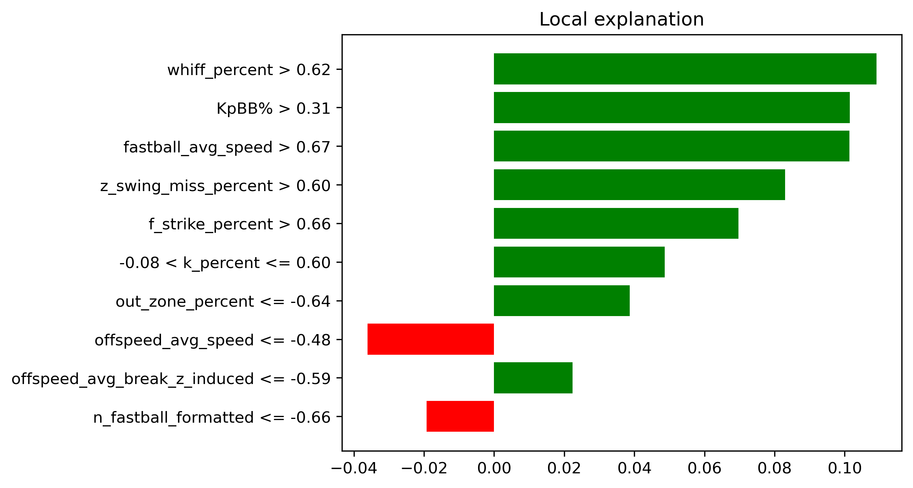
Other upper echelon pitchers of note:#
Spencer Schwellenbach - ATL (My Rank: 63, ESPN: 115)
Jacob Degrom - TEX (My Rank: 98, ESPN: 112)
Kodai Senga - NYM (My Rank: 164, ESPN: 150)
Jared Jones - PIT (My Rank: 87, ESPN: 160)
Sleeper: The Entire Tampa Bay Rays rotation#
If you aren’t familiar - the Rays consistently pump out quality MLB players out of nowhere. I expect at least two of the guys to significantly outperform their projections - just a quick blurb on all of them. I will only include Ryan Pepiot’s LIME plot to save space. Along with the fact that he does not have a single negative contribution in his top 10 most valuable features.
Shane McClanahan (My Rank: 124, ESPN: 244)#
McClanahan is coming off of his second Tommy John surgery and will likely be capped at 150 innings this season. But still, a pitcher who finished with a 2.54 ERA, 2.60 xFIP and a 30.3 K% just three years ago should not fall this far.
Ryan Pepiot (My Rank: 103, ESPN: 203)#
Pepiot is perhaps the favourite of the bunch, posting a 3.60 ERA with a 3.95 FIP in 2024. His fastball has an electric 19.4 inches of vertical break, and he posted a 82nd percentile whiff rate of 29.9% in 2024, hinting at some massive strikeout potential. 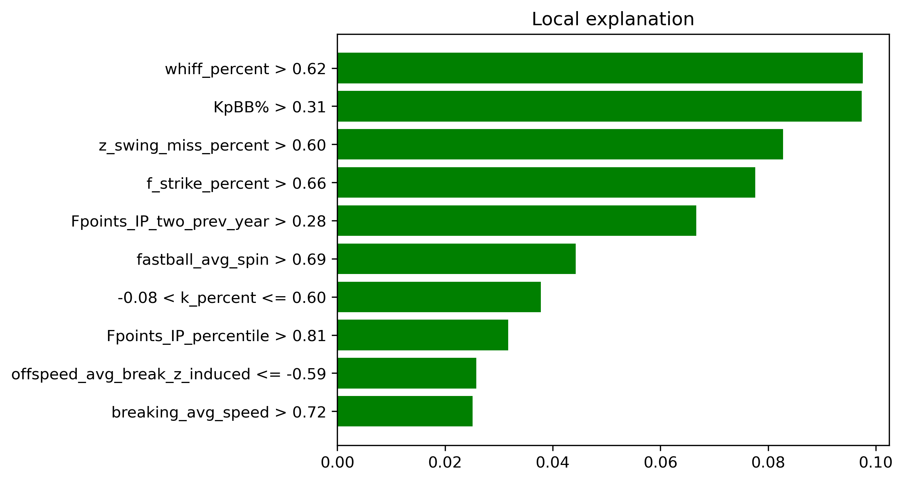
Taj Bradley (My Rank: 99, ESPN: 169)#
Bradley’s 2024 was a tale of two stories, posting a 2.90 ERA in the first half but faltering to a 5.30 ERA in the second half. The strikeouts are there at a 76th percentile 26.6 K%, but he has to limit hard contact a bit better to fully take the next step.
Shane Baz (My Rank: 270, ESPN 245)#
Baz produced a 3.06 ERA in 79 innings last season, although a 4.39 xFIP hints at some regression. His curveball grades out well at a 114 stuff+, and there is definitely potential to grow. Baz is the one member of the Rays rotation I am not as high on.
Drew Rasmussen (My Rank: 255, ESPN: 317)#
Rasmussen is absolutely nasty - he posted a 30% K rate to go along with an obscene 1.35 FIP and 2.57 xFIP in 28.2 relief/opener innings last year. His baseball savant page is an ode to Playboi Carti’s Whole Lotta Red. Take Rasmussen every single time at the end of drafts, although the security of his starting role is questionable and total innings may be limited.
Sleeper: Sandy Alcantara - MIA (My Rank: 179, ESPN: 298)#
Feels a bit weird to have a former Cy Young winner as a sleeper but here we are. Alcantara is coming off of Tommy John surgery, however all indiciations point towards him being fully healthy - including being named the Marlins Opening Day starter. Do not expect the 2022 version of Alcantara this season - his 2023 season was far less fruitful with a 4.14 ERA and 4.00 xFIP. Although his fastball averages a blazing 98 MPH, Sandy operates with more of a pitch to contact approach, producing a 87th percentile 51.9 GB % and only a 26th percentile K% of 19.8% in 2023. Alcantara does face potential innings limits along with the curse of playing for the Marlins, however it is impossible to pass up the upside if presented an opportunity at the end of drafts. 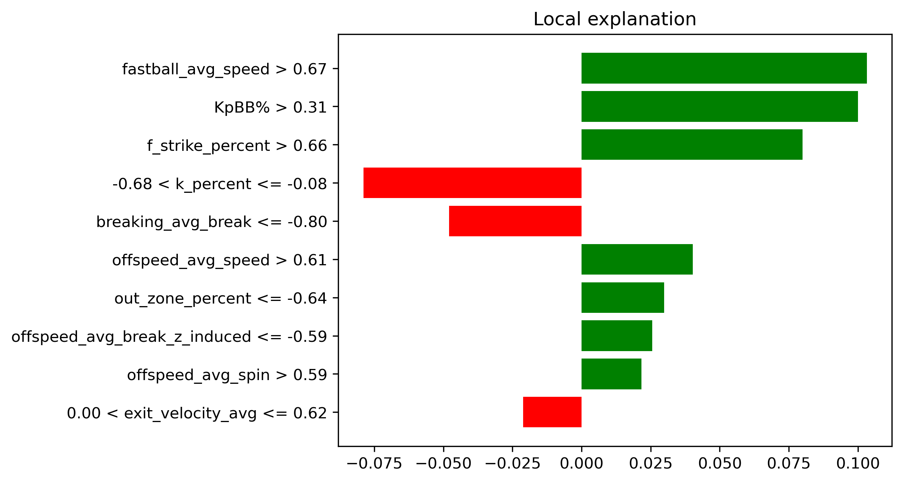
Sleeper: DJ Herz - WSH (My Rank: 188, ESPN: 431)#
To preface this - Herz is not guaranteed to be in the Nationals rotation at the beginning of the season. To me he should be going toe to toe with MacKenzie Gore to be the staff ace. On the surface Herz rookie season was just alright, he posted a 4.16 ERA in 88.2 innings with some command issues. His 3.26 xERA, 3.85 xFIP and 81st percentile 27.7% K rate indicate some true potential however. Herz utilizes a fastball with well above average horizontal movement (12.4 inches, 5.1 inches above average) along with a changeup to generate huge whiffs against right handed batters, while also including a slider. Herz could easily flame out, but is an intriguing upside pick, especially as the season matures. 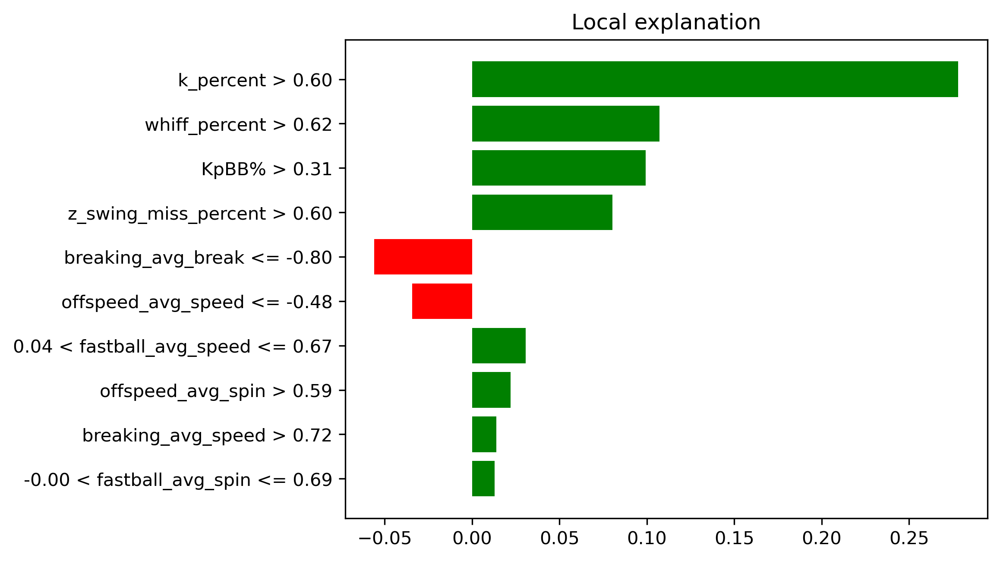
Sleeper: Jeffrey Springs - OAK (My Rank: 215, ESPN: 341)#
Springs has been a bit of a tease over the last few years - posting a 2.46 ERA in 135.1 IP in 2022, but being limited to 49 IP in the last two seasons due to injury. He is a soft tossing lefty who relies heavily on his changeup to get hitters off-balance, however Springs is still able to generate whiffs and Ks, with both his whiff% and K% eclipsing the 70th percentile in each of his last three seasons. The numbers suggest he did decline a bit last season with his Pitching+ dropping to 93 from an average of 110 over his career, however Springs still produced a 3.27 ERA with a 3.80 xFIP in his 33 IP. Springs is a large question mark heading into his age 32 season, but could return great value if he can stay healthy and maintain his success. 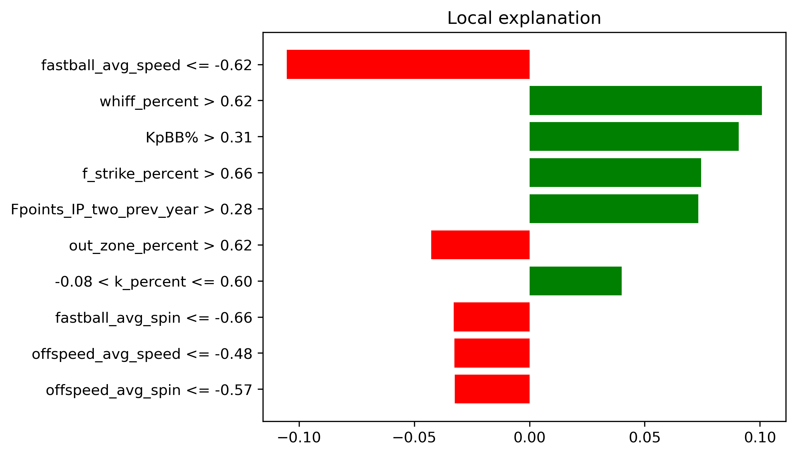
Sleeper: Clay Holmes - NYM (My Rank: 525, ESPN: 350)#
Ignore the rankings here completely - Holmes will be a completely different pitcher in 2025. He moved to the cross-town Mets after a tumultuous year as the closer for the Yankees, and will be starting games for them. Deja Vu from Michael King anyone? Although Holmes led the league with blown saves with 13 in 2024, he was still effective, posting a 3.14 ERA and a 3.01 xFIP. His bowling ball sinker (with a ridiculous 25.2 inches of vertical drop) produced a 100th percentile groundball rate of 64.6%, and he still maintained a 67th percentile K% of 25.1% with his slider. Holmes has added a changeup and cutter (shoutout @TJStats on X) to his repertoire this spring to fully round out his movement-heavy arsenal. The strikeouts are likely to drop as a starter, but I would not be surprised at all if Holmes has a quick ascnesion this season - think the Michael King of this year. 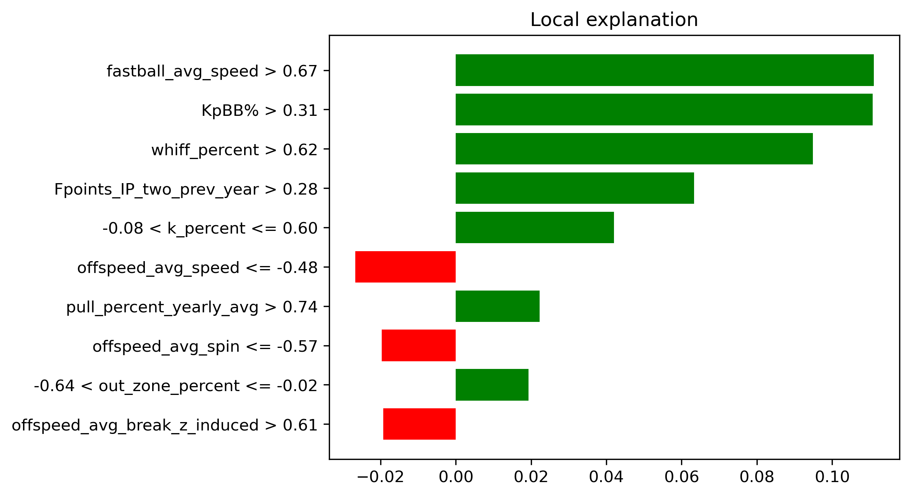
Other sleeper pitchers of note:#
Jackson Jobe - DET (My Rank: NA, ESPN: 462)
David Festa - MIN (My Rank: 484, ESPN: 413)
Cody Bradford - TEX (My Rank: 428, ESPN: 397)
Gavin Williams - CLE (My Rank: 245, ESPN: 315)
Bust: Zac Gallen - ARI (My Rank: 156, ESPN: 94)#
Following a great 2022 and 2023, Gallen showed some concern in 2024. The run-based statistics were fine - a 3.65 ERA with a 3.62 xFIP - but many of his underlying metrics took a hit. The main cause for concern was a loss of command as Gallen’s 2024 walk rate of 8.7% was far higher than an average of a 6.2% over the 2022-23 seasons. His fastball also became much less effective, with batters producing a .368 xwOBA against it in 2024 compared to a .324 xwOBA in 2023. The movement profile of Gallen’s fastball remained very similar, so this can likely be chalked up to a loss of command, or maybe just MLB hitters catching on. Stuff+ also implies a decrease in pitch quality, with a 92 Stuff+ in 2024 compared to a 97 Stuff+ career average. I would avoid drafting Gallen at his current ESPN rank.

Bust: Corbin Burnes - ARI (My Rank: 39, ESPN: 23)#
Don’t get me wrong, Corbin Burnes will still be a great pitcher in 2025. He just isn’t the same strikeout machine we saw from 2020-2022. His xFIP has jumped to an average of 3.67 over the last to seasons, up from an average of 2.71 during the aformentioned 2020-22 stretch. This is mainly a product of a decrease in whiffs on his cutter - which produced a 19% whiff rate in 2024 compared to a 28% whiff rate in 2022. This resulted in a league average K% of 23.1% in 2024. Burnes still excels at limiting hard contact, he just lacks the true SP1 upside that he once had. Don’t be afraid to draft Burnes, I just wouldn’t recommend going out of your way to do so. 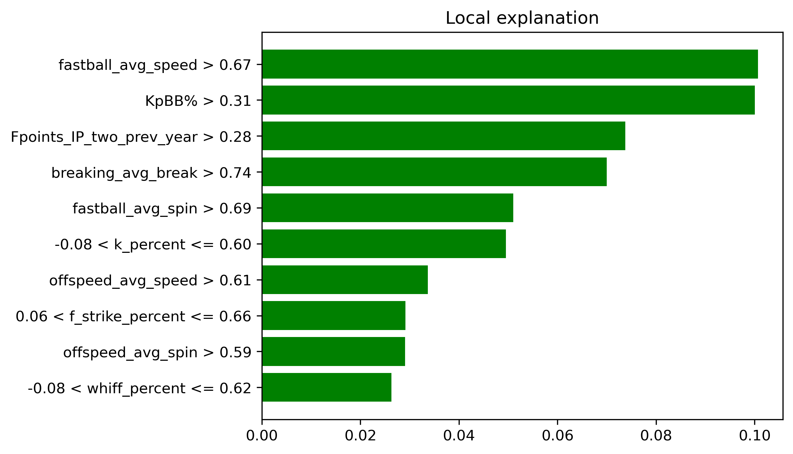
Bust: Tyler Glasnow - LAD (My Rank: 226, ESPN: 80)#
We all know that Glasnow is one of the nastiest pitchers in the league when healthy… but health is the issue. Last year his 134 IP was a career high, and he is a part of a ridiculous Dodgers rotation that can afford to limit him throughout the season. The only negative thing to say about Glasnow as a pitcher is that he is prone to giving up hard contact, with a 37th percentile hard-hit% of 40.1% in 2024. Other players like Jacob Degrom and Mike Trout are punished much more for their injury history, and I would be a bit weary of Glasnow just not producing enough volume this season. Draft him at your own risk though. 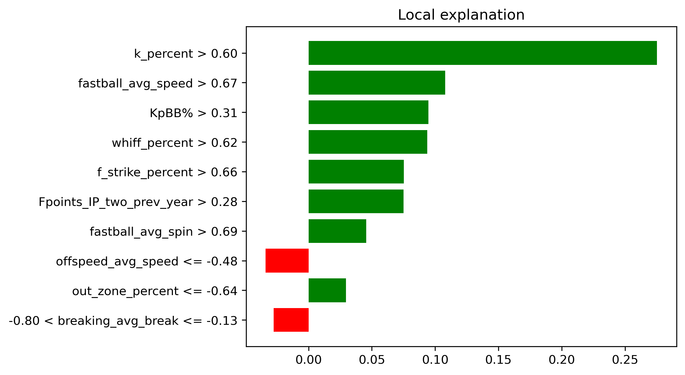
Relief Pitchers#
See Relief Pitcher rankings here
Relief pitchers are extremely volatile year to year and rely heavily on saves - which are very situational. I feel that ESPN values relievers too high in general, but that is up to interpretation.
Upper Echelon: Jhoan Duran - MIN (My Rank: 97, ESPN: 100)#
Duran had a down year for his standards last year with a 3.64 ERA. His 2.76 xERA and 2.25 xFIP indicate otherwise however. Duran possesses obscene stuff - headlined by a fastball that averages 100.5 MPH and a “splinker” that averages 97 MPH. He possessed a 88th percentile K rate (28.9%), 70th percentile BB rate (6.6%) and a 99th percentile groundball rate (61.7%) in 2024, all traits of a dominant closer. He does have some competiton for saves in Griffin Jax, however he is pretty locked in as the Twins closer this season. I like Duran as a high upside option out of the pen.
Upper Echelon: Felix Bautista - BAL (My Rank: 67, ESPN: 82)#
There are questions about the volume Bautista will obtain this year as he is returning from Tommy John surgery. There are not any questions about his performance. In his last season in 2023, Bautista posted a miniscule 1.48 ERA with a 2.30 xFIP. He also had four statistics in the 100th percentile - xERA (2.08), xBA(.142), whiff % (44.3%) and K% (46.4%). His 99.5 MPH fastball has a ridiculous 20.5 inches of vertical break, and he pairs this with a devastating splitter. He may be a bit slow out of the gate, but there is no reason to expect much different from Bautista this season. He very well might be the best per-inning pitcher in the league.
Sleeper: Lucas Erceg - KCR (My Rank: 261, ESPN: 180)#
Note: Erceg is not offically the closer yet as Carlos Estevez could be involved as well. This is assuming Erceg wins the job.
After being acquired midseason in 2024, Erceg posted a 2.88 ERA and 1.17 FIP with the Royals in 23 appearances. Overall he posted a 3.36 ERA and a 2.53 FIP on the season. Erceg has a rare four pitch mix out of the bullpen - utilizing a fastball, slider, sinker and changeup all above 20% of the time. Erceg really had no weakness last season - ending up above the 50th percentile in every statistic presented by Baseball Savant. He does not strike out batter at the same ridiculous rate as other big time closers, but he can be just as effective.
Bust: Ryan Helsley - STL (My Rank: 90, ESPN: 48)#
Helsley was very effective in 2024 posting a 2.04 ERA and 49 saves. However his 2.72 xERA and 3.35 xFIP indicate he maybe wasn’t as good as the base level statistics indicate. His K% of 29.7% in 2024 was down significantly from the previous two season as well, although it is still nothing to scoff at. There are slight some control issues with Helsley, as he produced a 40th percentile walk rate of 8.6% and did have some blow up outings. His low groundball percent of 37.2% leaving him vulnerable to extra base hits, which can be very costly as a closer looking to avoid blown saves. His 49 saves in 2024 also led the league, which seems very unlikely to occur again playing on a very mediocre Cardinals team in 2024. Take someone such as Mason Miller or Raisel Iglesias instead if you want a reliver in this range.